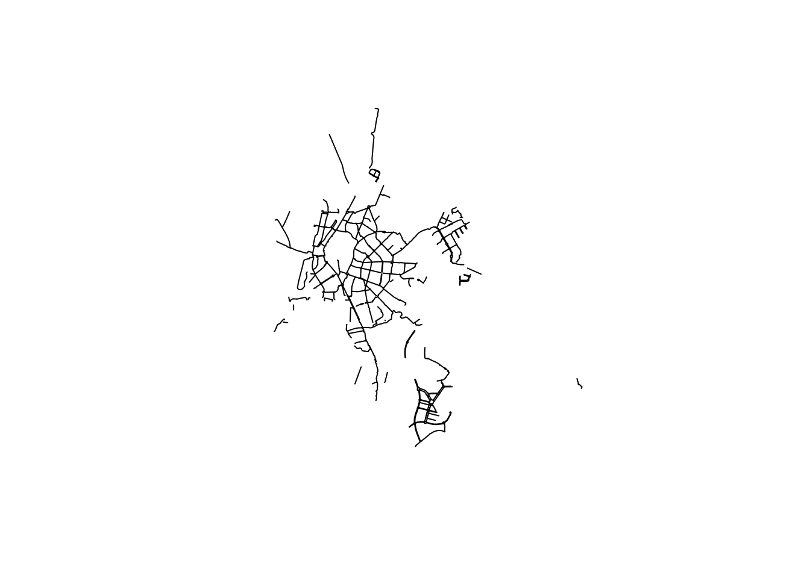

osmdata is an R package for downloading and using data from OpenStreetMap (OSM). OSM is a global open access mapping project, which anyone can contribute to or access data from (OpenStreetMap contributors 2017)–see the main website at www.openstreetmap.org/.
The development version of the osmdata R package can be installed with the devtools package using the following command:
devtools::install_github('osmdatar/osmdata')## '/usr/lib/R/bin/R' CMD INSTALL '/root/osmdata' --library='/tmp/RtmpscXAVq/devtools_install_46b1509d233c' --no-R --no-data --no-help --no-demo --no-inst --no-docs --no-exec --no-multiarch --no-test-load --preclean
## g++ -std=c++11 -I/usr/share/R/include -DNDEBUG -I"/usr/local/lib/R/site-library/Rcpp/include" -fpic -g -O2 -fstack-protector --param=ssp-buffer-size=4 -Wformat -Werror=format-security -D_FORTIFY_SOURCE=2 -g -c RcppExports.cpp -o RcppExports.o
## g++ -std=c++11 -I/usr/share/R/include -DNDEBUG -I"/usr/local/lib/R/site-library/Rcpp/include" -fpic -g -O2 -fstack-protector --param=ssp-buffer-size=4 -Wformat -Werror=format-security -D_FORTIFY_SOURCE=2 -g -c cleanup.cpp -o cleanup.o
## g++ -std=c++11 -I/usr/share/R/include -DNDEBUG -I"/usr/local/lib/R/site-library/Rcpp/include" -fpic -g -O2 -fstack-protector --param=ssp-buffer-size=4 -Wformat -Werror=format-security -D_FORTIFY_SOURCE=2 -g -c common.cpp -o common.o
## g++ -std=c++11 -I/usr/share/R/include -DNDEBUG -I"/usr/local/lib/R/site-library/Rcpp/include" -fpic -g -O2 -fstack-protector --param=ssp-buffer-size=4 -Wformat -Werror=format-security -D_FORTIFY_SOURCE=2 -g -c convert-osm-rcpp.cpp -o convert-osm-rcpp.o
## g++ -std=c++11 -I/usr/share/R/include -DNDEBUG -I"/usr/local/lib/R/site-library/Rcpp/include" -fpic -g -O2 -fstack-protector --param=ssp-buffer-size=4 -Wformat -Werror=format-security -D_FORTIFY_SOURCE=2 -g -c get-bbox.cpp -o get-bbox.o
## g++ -std=c++11 -I/usr/share/R/include -DNDEBUG -I"/usr/local/lib/R/site-library/Rcpp/include" -fpic -g -O2 -fstack-protector --param=ssp-buffer-size=4 -Wformat -Werror=format-security -D_FORTIFY_SOURCE=2 -g -c osmdata-sf.cpp -o osmdata-sf.o
## g++ -std=c++11 -I/usr/share/R/include -DNDEBUG -I"/usr/local/lib/R/site-library/Rcpp/include" -fpic -g -O2 -fstack-protector --param=ssp-buffer-size=4 -Wformat -Werror=format-security -D_FORTIFY_SOURCE=2 -g -c osmdata-sp.cpp -o osmdata-sp.o
## g++ -std=c++11 -I/usr/share/R/include -DNDEBUG -I"/usr/local/lib/R/site-library/Rcpp/include" -fpic -g -O2 -fstack-protector --param=ssp-buffer-size=4 -Wformat -Werror=format-security -D_FORTIFY_SOURCE=2 -g -c trace-osm.cpp -o trace-osm.o
## g++ -std=c++11 -shared -L/usr/lib/R/lib -Wl,-Bsymbolic-functions -Wl,-z,relro -o osmdata.so RcppExports.o cleanup.o common.o convert-osm-rcpp.o get-bbox.o osmdata-sf.o osmdata-sp.o trace-osm.o -L/usr/lib/R/lib -lROnce installed, it can be loaded in the usual way:
library(osmdata)osmdata uses the overpass API to download OpenStreetMap (OSM) data and can convert the results to either Simple Features (SF) or Spatial objects, respectively defined by the R packages sf and sp. overpass is a C++ library that serves OSM data over the web. All overpass queries begin with a bounding box, defined in osmdata with the function opq():
q <- opq(bbox = c(51.1, 0.1, 51.2, 0.2))Bounding boxes may also be defined by simply passing the name of a desired area, which does not have be precise:
q <- opq(bbox = 'Greater London, U.K.')
identical(opq(bbox = 'Greater London, U.K.'), opq(bbox = 'greater london uk'))## [1] TRUEFollowing the initial opq() call, osmdata queries are built by adding one or more ‘features’, which are specified in terms of key-value pairs. For example, all paths, ways, and roads are designated in OSM with key=highway, so that a query all motorways in greater London (UK) can be constructed as follows:
q <- opq(bbox = 'greater london uk')
q <- add_feature(q, key = 'highway', value = 'motorway')A detailed description of features is provided at the OSM wiki, or the osmdata function available_features() can be used to retrive the comprehensive list of feature keys currently used in OSM.
head (available_features ())## [1] "4wd only" "abandoned" "abutters" "access" "addr" "addr:city"There are two primary osmdata functions for obtaining data from a query: osmdata_sf() and osmdata_sp(), which return data in Simple Features (sf) and Spatial (sp) formats, respectively.
osmdata_sf (q)## Object of class 'osmdata' with:
## $bbox : 51.2867602,-0.510375,51.6918741,0.3340155
## $overpass_call : The call submitted to the overpass API
## $timestamp : [ Mon Mar 6 20:49:04 2017 ]
## $osm_points : 'sf' Simple Features Collection with 4564 points
## $osm_lines : 'sf' Simple Features Collection with 688 linestrings
## $osm_polygons : 'sf' Simple Features Collection with 0 polygons
## $osm_multilines : 'sf' Simple Features Collection with 0 multilinestrings
## $osm_multipolygons : 'sf' Simple Features Collection with 0 multipolygonsosmdata_sp (q) returns the equivalent data as SpatialPointsDataFrame and SpatialLinesDataFrame objects (with this particular query returning no polygons or multi objects).
As mentioned, osmdata obtains OSM data from the overpass API, which is
a read-only API that serves up custom selected parts of the OSM map data.
The syntax of overpass queries is powerful yet not easy to learn. This section briefly introduces the structure of overpass queries in order to help construct more efficient and powerful queries. Those wanting to skip straight onto query construction in osmdata may safely jump ahead to the query example below.
osmdata simplifies queries so that OSM data can be extracted with very little understanding of the overpass query syntax, although it is still possible to submit arbitrarily complex overpass queries via osmdata. An excellent place to explore overpass queries specifically and OSM data in general is the online interactive query builder at overpass-turbo, which includes a helpful corrector function for incorrectly formatted queries. Examples of its functionality in action can be found on the OpenStreetMap wiki, with full details of the overpass query language given in the Query Language Guide as well as the overpass API Language Guide.
osmdata queries are lists of class overpass_query. The actual query passed to the overpass API with a query can be obtained with the function qry_to_string(). Applied to the preceding query, this function gives:
## [out:xml][timeout:25];
## (
## node
## ["highway"="motorway"]
## (51.2867602,-0.510375,51.6918741,0.3340155);
## way
## ["highway"="motorway"]
## (51.2867602,-0.510375,51.6918741,0.3340155);
## relation
## ["highway"="motorway"]
## (51.2867602,-0.510375,51.6918741,0.3340155);
## );
## (._;>);out body;The resultant output may be pasted directly into the overpass-turbo online interactive query builder. (The output of qry_to_string has been somewhat reformatted here to reflect the format typically used in overpass-turbo.)
As demonstrated above, an osmdata query begins by specifying a bounding box with the function opq(), followed by specifying desired OSM features with add_feature().
q <- opq(bbox = 'Kunming, China')
q1 <- add_feature(q, key = 'natural', value = 'water')
q2 <- add_feature(q1, key = 'name:en', value = 'Dian', exact = FALSE)The parameter exact=FALSE controls the two ways of matching key-value pairs in osmdata: Either exactly and entirely, or through a partial string match. With the default exact=TRUE, this query would only return objects named ‘Dian’, and not, for example, any named ‘Lake Dian’. Using exact=FALSE will return ‘Lake Dian’ through just specifying value='Dian'.
Each successive feature added with add_feature() is added to previous features, so, for example, extending the previous query by an additional key-value pair to
q3 <- add_feature(q2, key = 'highway')will request all objects that are both water bodies with names matching ‘Dian’ AND that are also highways. Unsurprisingly, this query returns no data, but the previous queries do: the filtering is more restrictive with each feature added with add_feature().
The primary osmdata functions osmdata_sf() or osmdata_sp() pass these queries to overpass and return OSM data in corresponding sf or sp format, respectively. Both of these functions also accept direct overpass queries, such as those produced by the osmdata function qry_to_string(), or copied directly from the overpass-turbo query builder.
osmdata_sf (qry_to_string (q))## Object of class 'osmdata' with:
## $bbox :
## $overpass_call : The call submitted to the overpass API
## $timestamp : [ Tue Mar 7 10:06:30 2017 ]
## $osm_points : 'sf' Simple Features Collection with 360582 points
## ...Note that the result contains no value for bbox, because that information is lost when the full osmdata_query, q, is converted to a string. Nevertheless, the results of the two calls osmdata_sf (qry_to_string (q)) and osmdata_sf (q) differ only in the values of bbox and timestamp, while returning otherwise identical data.
In summary, osmdata queries are generally simplified versions of potentially more complex overpass queries, although arbitrarily complex overpass queries may be passed directly to the primary osmdata functions. As illustrated above, osmdata queries are generally constructed through initiating a query with opq(), and then specifying OSM features in terms of key-value pairs with add_feeature().
The simplest way to use osmdata is to simply request all data within a given bounding box:
q <- opq(bbox = 'London City, U.K.')
lots_of_data <- osmdata_sf (q)Queries are, however, usually refined through using add_feature(), which minimally requires a single key and returns all objects specifying any value for that key:
q <- add_feature(q, key = 'highway')
q <- add_feature(q, key = 'name')
not_so_much_data <- osmdata_sf (q)osmdata will use that query to return all named highways within the requested bounding box. Note that key specifications are requests for features which must include those keys, yet most features will also include many other keys, and thus osmdata objects generally list a large number of distinct keys, as demonstrated below.
To appreciate query building in more concrete terms, let’s imagine that we wanted to find all cycle paths in Seville, Spain:
q0 <- opq('Seville')
q1 <- add_feature(q0, key = 'highway', value = 'cycleway')
cway_sev <- osmdata_sp(q1)
sp::plot(cway_sev$osm_lines)
Now imagine we want to make a more specific query that only extracts designated cycleways or those which are bridges. Combining these into one query will return only those that are designated cycleways AND that are bridges:
q2 <- add_feature(q1, key = 'bicycle', value = 'designated')
q2 <- add_feature(q2, key = 'bridge', value = 'yes')
cway_sev_bicycle_des_bridge <- osmdata_sf(q2)
nrow (des_bike_and_bridge$osm_points); nrow (des_bike_and_bridge$osm_lines)## [1] 7 3That query returns only 7 points and 3 lines. Designed cycleways OR bridges can be obtained through simply combining multiple osmdata objects with the c operator:
q2 <- add_feature(q1, key = 'bicycle', value = 'designated')
q3 <- add_feature(q1, key = 'bridge', value = 'yes')
d2 <- osmdata_sf(q2)
d3 <- osmdata_sf(q3)
des_bike_or_bridge <- c (osmdata_sf(q2), osmdata_sf(q3))
nrow (des_bike_or_bridge$osm_points); nrow (des_bike_or_bridge$osm_lines)## [1] 208 40And as expected, the OR operation produces more data than the equivalent AND.
osmdata objectThe osmdata extraction functions, osmdata_sf(), and osmdata_sp(), both return objects of class osmdata, the structure of which is shown with the generic print method as demonstrated above. The actual spatial data contained in an osmdata object are of either sp format when extracted with osmdata_sp() or sf format when extracted with osmdata_sf().
class (osmdata_sf (q)$osm_lines)## [1] "sf" "data.frame"class (osmdata_sp (q)$osm_lines)## [1] "SpatialLinesDataFrame"
## attr(,"package")
## [1] "sp"In addition to these two functions, osmdata provides a third function, osmdata_xml(), which allows raw OSM data to be returned and optionally saved to disk in XML format. The following code demonstrates this function, beginning with a new query.
q <- opq(bbox = c(-0.12, 51.51, -0.11, 51.52)) # Central London, U.K.
q <- add_feature(q, key = 'building')
dat <- osmdata_xml(q, file='buildings.osm')
class (dat)## [1] "xml_document" "xml_node"This call both returns the same data as the object dat and saves them to the file buildings.osm. Downloaded XML data can be converted to sf or sp formats by simply passing the data to the respective osmdata functions, either as the name of a file or an XML object:
doc <- osmdata_xml (q, 'buildings.osm')
dat1 <- osmdata_sf (q, doc)
dat2 <- osmdata_sf (q, 'buildings.osm')
identical (dat1, dat2)## [1] TRUEThe following sub-sections now explore these three functions in more detail, beginning with osmdata_xnl().
osmdata_xml() functionosmdata_xml() returns OSM data in native XML format, and also allows these data to be saved directly to disk (conventionally using the file suffix .osm, although any suffix may be used). The XML data are formatting using the R package xml2, and may be processed within R using any methods compatible with such data, or may be processed by any other software able to load the XML data directly from disk.
The first few lines of the XML data downloaded above look like this:
readLines ('buildings.osm') [1:8]## [1] "<?xml version=\"1.0\" encoding=\"UTF-8\"?>"
## [2] "<osm version=\"0.6\" generator=\"Overpass API\">"
## [3] " <note>The data included in this document is from www.openstreetmap.org. The data is made available under ODbL.</note>"
## [4] " <meta osm_base=\"2017-03-07T09:28:03Z\"/>"
## [5] " <node id=\"21593231\" lat=\"51.5149566\" lon=\"-0.1134203\"/>"
## [6] " <node id=\"25378129\" lat=\"51.5135870\" lon=\"-0.1115193\"/>"
## [7] " <node id=\"25496793\" lat=\"51.5176768\" lon=\"-0.1111129\"/>"
## [8] " <node id=\"25496827\" lat=\"51.5164528\" lon=\"-0.1093186\"/>"These data can be used in any other programs able to read and process XML data, such as the open source GIS QGIS or the OSM data editor JOSM. The remainder of this vignette assumes that not only do you want to get OSM data using R, you also want to import and eventually process it, using R. For that you’ll need to import the data into a native R class.
As demonstrated above, downloaded data can be directly processed by passing either filenames or the R objects containing those data to the osmdata_sf/sp() functions:
dat_sp <- osmdata_sp (q, 'buildings.osm')
dat_sf <- osmdata_sf (q, 'buildings.osm')osmdata_sf() functionosmdata_sf() returns OSM data in Simple Features (SF) format, defined by the Open Geospatial Consortium, and implemented in the R package sf. This package provides a direct interface to the C++ Graphical Data Abstraction Library (GDAL) which also includes a so-called ‘driver’ for OSM data. This means that OSM data may also be read directly with sf, rather than using osmdata. In this case, data must first be saved to disk, which can be readily achieved using osmdata_xml() described above, or through downloading directly from the overpass interactive query builder.
The following example is based on this query:
q <- opq (bbox = 'Trentham, Australia')
q <- add_feature (q, key = 'name') # any named objects
osmdata_xml (q, 'trentham.osm')sf can then read such data independent of osmdata though
sf::st_read ('trentham.osm', layer = 'points')## Reading layer `points' from data source `trentham.osm' using driver `OSM'
## Simple feature collection with 38 features and 10 fields
## geometry type: POINT
## dimension: XY
## bbox: xmin: 144.2894 ymin: -37.4846 xmax: 144.3893 ymax: -37.36012
## epsg (SRID): 4326
## proj4string: +proj=longlat +datum=WGS84 +no_defsThe GDAL drivers used by sf can only load single ‘layers’ of features, for example, points, lines, or polygons. In contrast, osmdata loads all features simultaneously:
osmdata_sf (q, 'trentham.osm')## Object of class 'osmdata' with:
## $bbox : -37.4300874,144.2863388,-37.3500874,144.3663388
## $overpass_call : The call submitted to the overpass API
## $timestamp : ##------ Tues Mar 7 09:36:02 2017 ------##
## $osm_points : 'sf' Simple Features Collection with 7166 points
## $osm_lines : 'sf' Simple Features Collection with 263 linestrings
## $osm_polygons : 'sf' Simple Features Collection with 37 polygons
## $osm_multilines : 'sf' Simple Features Collection with 1 multilinestrings
## $osm_multipolygons : 'sf' Simple Features Collection with 6 multipolygonsEven for spatial objects of the same type (the same ‘layers’ in sf terminology), osmdata returns considerably more objects–7,166 points compared .with just 38. The raw sizes of data returned can be compared with:
s1 <- object.size (osmdata_sf (q, 'trentham.osm')$osm_points)
s2 <- object.size (sf::st_read ('trentham.osm', layer='points', quiet=TRUE))
as.numeric (s1 / s2)## [1] 511.4193And the osmdata points contain over 500 times as much data. The primary difference between sf/GDAL and osmdata is that the former returns only those objects unique to each category of spatial object. Thus OSM nodes (points in sf/osmdata representations) include, in sf/GDAL representation, only those points which are not part of any other objects (such as lines or polygons). In contrast, the osm_points object returned by osmdata includes all points regardless of whether or not these are represented in other spatial objects. Similarly, line objects in sf/GDAL exclude any lines that are part of other objects such as multipolygon or multiline objects.
This processing of data by sf/GDAL has two important implications:
An implicit hierarchy of spatial objects is enforced through including elements of objects only at their ‘highest’ level of representation, where multipolygon and multiline objects are assumed to be at ‘higher’ levels than polyon or line objects, and these in turn are at ‘higher’ levels than point objects. osmdata makes no such hierarchical assumptions.
All OSM are structured by giving each object a unique identifier so that the components of any given object (the nodes of a line, for example, or the lines of a multipolygon) can be described simply by giving these identifiers. This enables the components of any OSM object to be examined in detail. The sf/GDAL representation obviates this ability through removing these IDs and reducing everything to geometries alone (which is, after all, why it is called ‘Simple Features’). This means, for example, that the key-value pairs of the line or polygon components of multipolygon can never be extracted from an sf/GDAL representation. In contrast, osmdata retains all unique identifiers for all OSM objects, and so readily enables, for example, the properties of all point objects of a line to be extracted.
Another reason why osmdata returns more data than GDAL/sf is that the latter extracts only a restricted list of OSM keys, whereas osmdata returns all key fields present in the requested data:
names (sf::st_read ('trentham.osm', layer='points', quiet=TRUE)) # these are the keys## [1] "osm_id" "name" "barrier" "highway" "ref"
## [6] "address" "is_in" "place" "man_made" "other_tags"
## [11] "geometry"names (osmdata_sf (q, 'trentham.osm')$osm_points)## [1] "osm_id" "name" "X_description_"
## [4] "X_waypoint_" "addr.city" "addr.housenumber"
## [7] "addr.postcode" "addr.street" "amenity"
## [10] "barrier" "denomination" "foot"
## [13] "ford" "highway" "leisure"
## [16] "note_1" "phone" "place"
## [19] "railway" "railway.historic" "ref"
## [22] "religion" "shop" "source"
## [25] "tourism" "waterway" "geometry"key fields which are not specified in a given set of OSM data are not returned by osmdata, while GDAL/sf returns the same key fields regardless of whether any values are specified.
addr <- sf::st_read ('trentham.osm', layer='points', quiet=TRUE)$address
all (is.na (addr))## [1] TRUEand key=address contains no data yet is still returned by GDAL/sf.
Finally, note that osmdata will generally extract OSM data considerably faster than equivalent sf/GDAL routines (as detailed here).
osmdata_sp() functionAs with osmdata_sf() described above, OSM data may be converted to sp format without using osmdata via the sf functions demonstrated below:
dat <- sf::st_read ('buildings.osm', layer = 'multipolygons', quiet=TRUE)
dat_sp <- as (dat, 'Spatial')
class (dat_sp)## [1] "SpatialPolygonsDataFrame"
## attr(,"package")
## [1] "sp"These data are extracted using the GDAL, and so suffer all of the same shortcomings mentioned above. Note differences in the amount of data returned:
dim (dat_sp)## [1] 560 25dim (osmdata_sp (q, doc = 'buildings.osm')$osm_polygons)## [1] 566 114dim (osmdata_sp (q, doc = 'buildings.osm')$osm_multipolygons)## [1] 15 52As described above, osmdata returns all data of each type and so allows the components of any given spatial object to be examined in their own right. This ability to extract, for example, all points of a line, or all polygons which include a given set of points, is referred to as recursive searching.
Recursive searching is not possible with GDAL/sf, because OSM identifiers are removed, and only the unique data of each type of object are retained. To understand both recursive searching and why it is useful, note that OSM data are structured in three hierarchical levels:
nodes representing spatial points
ways representing lines, both as polygons (with connected ends) and non-polygonal lines
relations representing more complex objects generally comprising collections of ways and/or nodes. Examples include multipolygon relations comprising an outer polygon (which may itself be made of several distinct ways which ultimately connect to form a single circle), and several inner polygons.
Recursive searching allows for objects within any one of these hierarchical levels to be extracted based on components in any other level. Recursive searching is performed in osmdata with the following functions:
osm_points(), which extracts all point or node objects
osm_lines(), which extracts all way objects that are lines (that are, that are not polygons)
osm_polygons(), which extracts all polygon objects
osm_multilines(), which extracts all multiline objects; and
osm_multipolygons(), which extracts all multipolygon objects.
Each of these functions accepts as an argument a vector of OSM identifiers. To demonstrate these functions, we first re-create the example above of named objects from Trentham, Australia:
q <- opq (bbox = 'Trentham, Australia')
q <- add_feature (q, key = 'name') # any named objects
tr <- osmdata_sf (q)Then imagine we are interested in the osm_line object describing the ‘Coliban River’:
i <- which (tr$osm_lines$name == 'Coliban River')
coliban <- tr$osm_lines [i,]
coliban [which (!is.na (coliban))]## Simple feature collection with 1 feature and 3 fields
## geometry type: LINESTRING
## dimension: XY
## bbox: xmin: 144.3235 ymin: -37.37162 xmax: 144.3335 ymax: 37.36366
## epsg (SRID): 4326
## proj4string: +proj=longlat +datum=WGS84 +no_defs
## osm_id name waterway geometry
## 87104907 87104907 Coliban River river LINESTRING(144.323471069336...The locations of the points of this line can be extracted directly from the sf object with
coliban$geometry [[1]]## LINESTRING(144.323471069336 -37.3716201782227, 144.323944091797 -37.3714790344238, 144.324356079102 -37.3709754943848, 144.324493408203 -37.3704833984375, 144.324600219727 -37.370174407959, 144.324981689453 -37.3697204589844, 144.325149536133 -37.369441986084, 144.325393676758 -37.3690567016602, 144.325714111328 -37.3686943054199, 144.326080322266 -37.3682441711426)The output contains nothing other than geometries (because, to reiterate, these are ‘Simple Features’), and no further information regarding those points can be extracted. The Coliban River has a waterfall in Trentham, and one of the osm_points objects describes this waterfall. The information necessary to locate this waterfall is removed from the GDAL/sf representation, but can be extracted with osmdata with the following lines, noting that the OSM ID of the line coliban is given by rownames (coliban).
pts <- osm_points (tr, rownames (coliban))
wf <- pts [which (pts$waterway == 'waterfall'),]
wf [which (!is.na (wf))]## Simple feature collection with 1 feature and 4 fields
## geometry type: POINT
## dimension: XY
## bbox: xmin: 144.3246 ymin: -37.37017 xmax: 144.3246 ymax: -37.37017
## epsg (SRID): 4326
## proj4string: +proj=longlat +datum=WGS84 +no_defs
## osm_id name tourism waterway
## 1013064837 1013064837 Trentham Falls attraction waterfall
## geometry
## 1013064837 POINT(144.324600219727 -37....This point could be used as the basis for further recursive searches. For example, all multipolygon objects which include Trentham Falls could be extracted with:
mp <- osm_multipolygons (tr, rownames (wf))Although this returns no data in this case, it nevertheless demonstrates the usefulness and ease of recursive searching with osmdata.
Eugster, Manuel J a, and Thomas Schlesinger. 2012. “Osmar: OpenStreetMap and R.” The R Journal 5 (1): 53–64.
Lovelace, Robin. 2014. “Harnessing Open Street Map Data with R and QGIS.” EloGeo.
OpenStreetMap contributors. 2017. “Planet dump retrieved from http://planet.osm.org.” http://www.openstreetmap.org.
Padgham, Mark. 2016. Osmplotr: Customisable Images of Openstreetmap Data. https://cran.r-project.org/package=osmplotr.